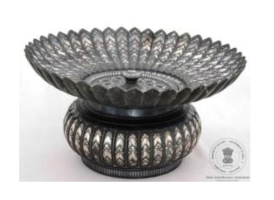

🔇 Is bhasha me is vastu ka audio abhi uplabdh nahi hai.
अभिग्रहण क्रमांक: XXXIII-81-1 हाथ धोने का पात्र (सैलाबची)

अभिग्रहण क्रमांक: XXXIII-81-1
यह हाथ धोने का पात्र ताँबा, चाँदी और जस्ता से बना है। यह प्रायः बिदरी शिल्प का उत्कृष्ट उदाहरण है, जिसकी उत्पत्ति भारत के कर्नाटक राज्य के बीदर नगर में हुई। बिदरी शिल्प का मुख्य आधार जस्ता, ताँबा और सीसा की मिश्रधातु होती है, जिस पर आसानी से जंग नहीं लगता। बिदरी वस्तुओं के निर्माण की पाँच प्रमुख अवस्थाएँ होती हैं— ढलाई, घिसाई, नक्काशी, तार जड़ाई तथा मिश्रधातु को काला करना।
इस पात्र का निचला भाग आँवला के आकार का है। इसके शरीर और ढक्कन पर उभरी हुई गोलाकार धारियों की सजावट है तथा ढक्कन पर कली के आकार की पकड़ बनी है। ढक्कन के मध्य भाग में समान डिज़ाइन के साथ छोटे-छोटे छिद्र बनाए गए हैं। यह गोल पात्र कमल के फूल के आकार में बनाया गया है और भोजन के बाद हाथ धोने के लिए उपयोग किया जाता था। यह वस्तु ईस्वी सन् 16वीं शताब्दी के उत्तरार्ध की है।
Acc No: XXXIII-81-1 Basin (Sailabchi)
Acc No: XXXIII-81-1
This hand washing vessel (Sailabchi) is crafted from copper, silver components, and zinc alloy. It is a prime example of 'Bidriware', an art form originating from Bidar in Karnataka, India. The primary base material is an alloy of zinc, copper, and lead, which is resistant to corrosion. The crafting of a Bidri artifact involves five major stages: casting, polishing, engraving, inlaying of metal (silver/gold), and blackening the alloy.
The basin features an amla-shaped base, with concentric fluted ridges on its main body and a bud-shaped knob on the perforated lid. Designed in the shape of a lotus flower, this circular basin was traditionally used for hand washing after meals. It dates back to the late 16th century CE.
1. బేసిన్ (సైలాబ్చి)
Acc No: XXXIII-81-1
రాగి, వెండి భాగాలతో మరియు జింక్ పదార్థంతో తయారు చేయబడిన పాత్ర. ఇది సాధారణంగా బిద్రి వేర్, దీని మూలం భారతదేశంలోని కర్ణాటక రాష్ట్రంలోని బీదర్కు చెందినది. దీనిలో ఉపయోగించే ప్రాథమిక పదార్థం జింక్, రాగి మరియు సీసం యొక్క మిశ్రమలోహం కారణంగా, ఇది ఎప్పటికీ తుప్పు పట్టకుండా ఉంటుంది. ఒక బిద్రి పాత్ర తయారీలో ఐదు దశలు ఉంటాయి; పోత పోయడం, పాలిష్ చేయడం, చెక్కడం, పొదుగు పని మరియు మిశ్రమలోహానికి నలుపు రంగు వేయడం వంటివి.
ఈ బేసిన్ అని పిలవబడే దిని అడుగుభాగం ఉసిరికాయ ఆకారంలో ఉంటుంది. దీని ప్రధాన భాగం (అంటే, body) మరియు మూత గుండ్రని ఉబ్బెత్తు డిజైన్లను, మొగ్గ ఆకారపు గుండీని కలిగి ఉంటాయి. మూత కూడా అదే డిజైన్తో ఉండి, మధ్యలో ఒక రంధ్రం ఉంటుంది. తామర పువ్వు ఆకారంలో రూపొందించబడిన ఈ గుండ్రని పాత్రను భోజనం తర్వాత చేతులు కడుక్కోవడానికి ఉపయోగించేవారు. ఇది పదహారవ శతాబ్దం చివరి కాలం నాటిది.
ఈ బేసిన్ అని పిలవబడే దిని అడుగుభాగం ఉసిరికాయ ఆకారంలో ఉంటుంది. దీని ప్రధాన భాగం (అంటే, body) మరియు మూత గుండ్రని ఉబ్బెత్తు డిజైన్లను, మొగ్గ ఆకారపు గుండీని కలిగి ఉంటాయి. మూత కూడా అదే డిజైన్తో ఉండి, మధ్యలో ఒక రంధ్రం ఉంటుంది. తామర పువ్వు ఆకారంలో రూపొందించబడిన ఈ గుండ్రని పాత్రను భోజనం తర్వాత చేతులు కడుక్కోవడానికి ఉపయోగించేవారు. ఇది పదహారవ శతాబ్దం చివరి కాలం నాటిది.
۱. بیسن (سلفچی)
اندراج نمبر: XXXIII-81-1
یہ سلفچی تانبے اور چاندی کے اجزا سے تیار کی گئی ہے، جبکہ اس میں زنک کا مواد بھی شامل ہے۔ یہ بیدری فن کاری کی ایک مثال ہے، جس کا آغاز بیدر، کرناٹک، ہندوستان سے ہوا۔ اس میں استعمال ہونے والا بنیادی مادہ جست، تانبے اور سیسے کا مرکب ہوتا ہے، جو زنگ لگنے سے محفوظ رہتا ہے۔ بیدری اشیا کی تیاری کے پانچ اہم مراحل ہوتے ہیں: ڈھلائی، پالش کرنا، نقش بنانا، جڑائی کرنا اور دھات کو سیاہ رنگ دینا۔
اس سلفچی کا نچلا حصہ آملہ نما پھل کی شکل کا ہے۔ اس کے جسم اور ڈھکن پر گول ابھرے ہوئے نقش بنائے گئے ہیں، جبکہ ڈھکن پر کلی کی شکل کا دستہ موجود ہے۔ اسی طرز کے نقش کے ساتھ درمیان میں سوراخ دار ڈیزائن بھی بنایا گیا ہے۔ یہ گول سلفچی کمل کے پھول کی شکل میں تیار کی گئی ہے اور کھانے کے بعد ہاتھ دھونے کے لیے استعمال کی جاتی تھی۔یہ فن سولہویں صدی عیسوی کے اواخر سے تعلق رکھتا ہے۔
اس سلفچی کا نچلا حصہ آملہ نما پھل کی شکل کا ہے۔ اس کے جسم اور ڈھکن پر گول ابھرے ہوئے نقش بنائے گئے ہیں، جبکہ ڈھکن پر کلی کی شکل کا دستہ موجود ہے۔ اسی طرز کے نقش کے ساتھ درمیان میں سوراخ دار ڈیزائن بھی بنایا گیا ہے۔ یہ گول سلفچی کمل کے پھول کی شکل میں تیار کی گئی ہے اور کھانے کے بعد ہاتھ دھونے کے لیے استعمال کی جاتی تھی۔یہ فن سولہویں صدی عیسوی کے اواخر سے تعلق رکھتا ہے۔
অ্যাক্সেস নং: XXXIII-81-1 বেসিন (সৈলাবচি)
अभिग्रहण क्रमांक: XXXIII-81-1
এটি তামা, রুপা এবং দস্তার উপাদান দিয়ে তৈরি একটি বেসিন। এটি মূলত ভারতের কর্ণাটকের বিদার অঞ্চলের ঐতিহ্যবাহী 'বিদ্রি শিল্প' এর নিদর্শন। এর মূল উপাদান হিসেবে দস্তা, তামা ও সিসার একটি সংকর ধাতু ব্যবহার করা হয়েছে, যা সহজে ক্ষয়প্রাপ্ত হয় না। একটি বিদ্রি শিল্পকর্ম তৈরির প্রক্রিয়ায় পাঁচটি ধাপ থাকে: সেইগুলি হল- ছাঁচে ঢালাই, মসৃণকরণ, খোদাই, ধাতুসংযোজন এবং সংকর ধাতুকে কালো রঙে রূপান্তর।
বেসিনটির তলদেশ 'আমলকী' ফলের আকৃতিবিশিষ্ট এবং এর গায়ে বৃত্তাকার ও উঁচু খাঁজকাটা নকশা রয়েছে। এর ঢাকনাটিতে কুঁড়ির মতো দেখতে একটি হাতল ও অনুরূপ নকশা বিদ্যমান এবং ঢাকনার মাঝের অংশে ছিদ্রযুক্ত নকশা রয়েছে। পদ্মফুলের আদলে তৈরি এই গোলাকার বেসিনটি আহারের পর হাত ধোয়ার কাজে ব্যবহৃত হতো। এটি ষোড়শ শতাব্দীর শেষভাগের নিদর্শন।
Acc No: XXXIII-81-1 બેસિન (શૈલબચી)
अभिग्रहण क्रमांक: XXXIII-81-1
આ બેસિન (વાસણ) તાંબા અને ચાંદીના ઘટકો તથા જસત (ઝિંક) સામગ્રીમાંથી બનાવવામાં આવ્યું છે. બિદરી વેર (બિદરી કામ) મૂળ રૂપે ભારતના કર્નાટક રાજ્યના બિદાર શહેરથી ઉદ્ભવ પામ્યું છે. તેમાં વપરાતી મૂળ સામગ્રી જસત, તાંબું અને સીસાની મિશ્રધાતુ છે, જે કાટ લાગવા સામે સુરક્ષિત રહે છે. બિદરી કલાકૃતિના ઉત્પાદનમાં પાંચ તબક્કા હોય છે: ઢાળવું (કાસ્ટિંગ), પોલીશ કરવું, કોતરણી કરવી, જડતર કામ કરવું (ઇનલેઇંગ) અને મિશ્રધાતુને કાળી કરવી.
આ બેસિન આમળાના આકારનું તળિયું ધરાવે છે, જેના શરીર પર ગોળાકાર ઉપસેલી ખાંચોની ભાત છે અને ઢાંકણ પર કળીના આકારનું બટન (નોબ) છે, જેમાં સમાન ડિઝાઇન છે અને મધ્ય ભાગમાં ઢાંકણ કાણું પાડેલું (છિદ્રિત) છે. આ ગોળાકાર બેસિન કમળના ફૂલના આકારમાં ડિઝાઇન કરવામાં આવ્યું છે અને તેનો ઉપયોગ ભોજન પછી હાથ ધોવા માટે થતો હતો. તે ૧૬મી સદીના ઉત્તરાર્ધનું છે.
Acc No: XXXIII-81-1 ಬೇಸಿನ್ (ಸೈಲಾಬ್ಚಿ)
अभिग्रहण क्रमांक: XXXIII-81-1
ತಾಮ್ರ ಮತ್ತು ಬೆಳ್ಳಿಯ ಅಂಶಗಳು ಹಾಗೂ ಸತುವಿನ ವಸ್ತುವಿನಿಂದ ಮಾಡಲ್ಪಟ್ಟ ಪಾತ್ರೆ. ಇದು ಸಾಮಾನ್ಯವಾಗಿ ಕರ್ನಾಟಕದ ಬೀದರ್ನಿಂದ ಉದ್ಭವಿಸಿದ 'ಬಿದ್ರಿ ಕಲೆ'ಗೆ ಸೇರಿದ್ದಾಗಿದೆ. ಇದಕ್ಕೆ ಬಳಸಲಾದ ಮೂಲ ವಸ್ತುವು ಸತು, ತಾಮ್ರ ಮತ್ತು ಸೀಸದ ಮಿಶ್ರಲೋಹವಾಗಿದೆ, ಆದರಿಂದ್ದ ಇದು ತುಕ್ಕು ಹಿಡಿಯುವುದಿಲ್ಲ. ಬಿದ್ರಿ ವಸ್ತುವಿನ ತಯಾರಿಕೆಯಲ್ಲಿ ಐದು ಹಂತಗಳಿವೆ: ಎರಕ ಹೊಯ್ಯುವುದು, ಹೊಳಪು ನೀಡುವುದು, ಕೆತ್ತನೆ ಮಾಡುವುದು, ಕುಸರಿ ಕೆಲಸ ಮತ್ತು ಮಿಶ್ರಲೋಹವನ್ನು ಕಪ್ಪಾಗಿಸುವುದು.
ಈ ಪಾತ್ರೆಯ ತಳಭಾಗವು ನೆಲ್ಲಿಕಾಯಿಯ ಆಕಾರದಲ್ಲಿದ್ದು, ದೇಹ ಮತ್ತು ಮೊಗ್ಗು ಆಕಾರದ ಹಿಡಿಕೆಯನ್ನು ಹೊಂದಿರುವ ಮುಚ್ಚಳದ ಮೇಲೆ ವೃತ್ತಾಕಾರದ ಉಬ್ಬು ಸಾಲುಗಳ ವಿನ್ಯಾಸವಿದೆ. ಮಧ್ಯಭಾಗದಲ್ಲಿ ರಂಧ್ರವಿರುವ ಮುಚ್ಚಳದ ಮೇಲೂ ಇದೇ ರೀತಿಯ ವಿನ್ಯಾಸವಿದೆ. ಈ ದುಂಡಗಿನ ಪಾತ್ರೆಯನ್ನು ಕಮಲದ ಹೂವಿನ ಆಕಾರದಲ್ಲಿ ವಿನ್ಯಾಸಗೊಳಿಸಲಾಗಿದ್ದು, ಊಟದ ನಂತರ ಕೈ ತೊಳೆಯಲು ಬಳಸಲಾಗುತ್ತಿತ್ತು. ಇದು ಕ್ರಿ.ಶ. 16ನೇ ಶತಮಾನದ ಅಂತ್ಯಕ್ಕೆ ಸೇರಿದುದಾಗಿದೆ.
୧. ହାତ ଧୁଆ ପାତ୍ର (ସୈଲାବ୍ଚି)
Acc No: XXXIII-81-1
ଏହା ତମ୍ବା ଏବଂ ରୂପା ତଥା ଜିଙ୍କ୍-ରେ ତିଆରି ଏକ ହାତ ଧୁଆ ପାତ୍ର। ସାଧାରଣତଃ ଏହା ଏକ ବିଦ୍ରିୱେୟାର୍ ଅଟେ ଏବଂ ଏହାର ଉତ୍ପତ୍ତି ଭାରତର କର୍ଣ୍ଣାଟକ ସ୍ଥିତ 'ବିଦର' ରୁ ହୋଇଛି। ଏଥିରେ ବ୍ୟବହୃତ ମୂଳ ସାମଗ୍ରୀ ହେଉଛି ଜିଙ୍କ୍, ତମ୍ବା ଏବଂ ସୀସାର ଏକ ମିଶ୍ରଣ, ଯାହା ସହଜରେ କଳଙ୍କି ଲାଗି ନଷ୍ଟ ହୁଏ ନାହିଁ। ଏକ ବିଦ୍ରି ଜିନିଷ ପ୍ରସ୍ତୁତ କରିବାରେ ପାଞ୍ଚଟି ପର୍ଯ୍ୟାୟ ଥାଏ; ଯଥା—ଢଳେଇ କରିବା, ପଲିସ୍ କରିବା, ଖୋଦିତ କରିବା, ଜଡ଼ିତ କରିବା ଏବଂ ମିଶ୍ରଣକୁ କଳା କରିବା।
ଏହି ବାସନର ତଳ ଭାଗଟି ଅଁଳା ଆକାରର, ଶରୀର ଏବଂ ଢାଙ୍କଣି ଉପରେ ଗୋଲାକାର ଉଠାଣିଆ ଫ୍ଲୁଟିଙ୍ଗ୍ ଡିଜାଇନ୍ ରହିଛି ଏବଂ ଏହାର ମଧ୍ୟଭାଗରେ ଏକ କଢ଼ ଆକାରର ନବ୍ ଏବଂ ସମାନ ଡିଜାଇନ୍ ସହିତ ମଝିରେ କଣା କଣା ହୋଇଥିବା ଢାଙ୍କୁଣି ରହିଛି। ଏହି ଗୋଲାକାର ବାସନକୁ ପଦ୍ମ ଫୁଲର ଆକାରରେ ଡିଜାଇନ୍ କରାଯାଇଛି ଏବଂ ଖାଦ୍ୟ ଖାଇସାରିବା ପରେ ହାତ ଧୋଇବା ପାଇଁ ଏହାକୁ ବ୍ୟବହାର କରାଯାଉଥିଲା। ଏହି ବାସନ୍ଟି ୧୬ ଶତାବ୍ଦୀର ଶେଷ ଭାଗର ଅଟେ।
ଏହି ବାସନର ତଳ ଭାଗଟି ଅଁଳା ଆକାରର, ଶରୀର ଏବଂ ଢାଙ୍କଣି ଉପରେ ଗୋଲାକାର ଉଠାଣିଆ ଫ୍ଲୁଟିଙ୍ଗ୍ ଡିଜାଇନ୍ ରହିଛି ଏବଂ ଏହାର ମଧ୍ୟଭାଗରେ ଏକ କଢ଼ ଆକାରର ନବ୍ ଏବଂ ସମାନ ଡିଜାଇନ୍ ସହିତ ମଝିରେ କଣା କଣା ହୋଇଥିବା ଢାଙ୍କୁଣି ରହିଛି। ଏହି ଗୋଲାକାର ବାସନକୁ ପଦ୍ମ ଫୁଲର ଆକାରରେ ଡିଜାଇନ୍ କରାଯାଇଛି ଏବଂ ଖାଦ୍ୟ ଖାଇସାରିବା ପରେ ହାତ ଧୋଇବା ପାଇଁ ଏହାକୁ ବ୍ୟବହାର କରାଯାଉଥିଲା। ଏହି ବାସନ୍ଟି ୧୬ ଶତାବ୍ଦୀର ଶେଷ ଭାଗର ଅଟେ।
१. खोरे (शैलबची)
कार्यवाही क्र: XXXIII-81-1
तांबे, चांदीचे घटक आणि जस्त या सामग्रीपासून बनवलेले बेसिन. हे सहसा बिद्री काम असते, ज्याचा उगम बिदर, कर्नाटक, भारत येथून झाला आहे. यात वापरलेली मूळ सामग्री जस्त, तांबे आणि शिसे यांचा मिश्रधातू आहे, ज्याला गंज लागत नाही. बिद्री वस्तूच्या निर्मितीमध्ये पाच टप्पे असतात; ओतकाम, झिलई (पॉलिशिंग), कोरीव काम, जडाव काम आणि मिश्रधातू काळा करणे.
बेसिनचा तळ आवळ्याच्या आकाराचा असून, मुख्य भागावर आणि झाकणावर वर्तुळाकार उठावदार नक्षी आहे, झाकणाला कळीच्या आकाराची मूठ असून, आवरण समान नक्षीचे आणि मध्यभागी सच्छिद्र आहे. कमळाच्या फुलाच्या आकारात तयार केलेल्या या गोल बेसिनचा वापर जेवणानंतर हात धुण्यासाठी केला जात असे. हे इ.स. १६ व्या शतकाच्या उत्तरार्धातील आहे.
बेसिनचा तळ आवळ्याच्या आकाराचा असून, मुख्य भागावर आणि झाकणावर वर्तुळाकार उठावदार नक्षी आहे, झाकणाला कळीच्या आकाराची मूठ असून, आवरण समान नक्षीचे आणि मध्यभागी सच्छिद्र आहे. कमळाच्या फुलाच्या आकारात तयार केलेल्या या गोल बेसिनचा वापर जेवणानंतर हात धुण्यासाठी केला जात असे. हे इ.स. १६ व्या शतकाच्या उत्तरार्धातील आहे.
Acc No: XXXIII-81-1 ബേസിൻ (സൈലാബ്ചി)
Acc No: XXXIII-81-1
ചെമ്പ്, വെള്ളി ഘടകങ്ങളും സിങ്കും ഉപയോഗിച്ച് നിർമ്മിച്ച ബേസിൻ. ഇത് സാധാരണയായി 'ബിദ്രി വെയർ' എന്നാണ് അറിയപ്പെടുന്നത്; ഇന്ത്യയിലെ കർണാടകയിലുള്ള ബിദാറിലാണ് ഇതിന്റെ ഉത്ഭവം. എളുപ്പത്തിൽ തുരുമ്പെടുക്കാത്ത സിങ്ക്, ചെമ്പ്, ഈയം എന്നിവയുടെ ഒരു സങ്കരലോഹമാണ് ഇതിന്റെ അടിസ്ഥാന നിർമ്മാണവസ്തു. ഒരു ബിദ്രി ഉൽപ്പന്നത്തിന്റെ നിർമ്മാണത്തിന് അഞ്ച് ഘട്ടങ്ങളുണ്ട്; വാർത്തെടുക്കൽ, മിനുസപ്പെടുത്തൽ, കൊത്തുപണി, ലോഹം പതിപ്പിക്കൽ, സങ്കരലോഹത്തിന് കറുപ്പ് നിറം നൽകൽ എന്നിവയാണവ.
ബേസിന് ആമലകത്തിന്റെ ആകൃതിയിലുള്ള അടിഭാഗമാണുള്ളത്. ഇതിന്റെ പ്രധാന ഭാഗത്തും മുകുളത്തിന്റെ ആകൃതിയിലുള്ള നോബോടു കൂടിയ മൂടിയിലും വൃത്താകൃതിയിൽ പൊങ്ങിനിൽക്കുന്ന വരമ്പുകൾ പോലെയുള്ള ഡിസൈനുകളുണ്ട്. ഇതിന് സമാനമായ ഡിസൈനുള്ള മൂടിയുടെ മധ്യഭാഗം സുഷിരങ്ങളോടു കൂടിയതാണ്. താമരപ്പൂവിന്റെ ആകൃതിയിൽ രൂപകൽപ്പന ചെയ്തിട്ടുള്ള ഈ വൃത്താകൃതിയിലുള്ള ബേസിൻ ഭക്ഷണത്തിന് ശേഷം കൈ കഴുകാനാണ് ഉപയോഗിച്ചിരുന്നത്. ഇത് എ.ഡി 16-ാം നൂറ്റാണ്ടിന്റെ അവസാന കാലഘട്ടത്തിലേതാണെന്ന് കരുതപ്പെടുന്നു.
1. கிண்ணம் / கை கழுவும் பாத்திரம் (Sailabchi)
Acc No: XXXIII-81-1
இக்கிண்ணம் செம்பு, வெள்ளி மற்றும் துத்தநாகப் பொருட்களால் செய்யப்பட்டது. இது பொதுவாக, இந்தியாவின் கர்நாடக மாநிலத்தில் உள்ள பீதரைத் தாயகமாகக் கொண்ட 'பீத்ரி' கைவினைப்பொருளாகும். இதற்குப் பயன்படுத்தப்படும் அடிப்படைப் பொருள், துத்தநாகம், செம்பு மற்றும் ஈயம் கலந்த கலவையாகும்; இது எளிதில் துருப்பிடிக்காது. ஒரு பீத்ரி பொருளின் உற்பத்தியில், ஐந்து நிலைகள் உள்ளன: வார்ப்பு, மெருகூட்டுதல், செதுக்குதல், பதித்தல் மற்றும் உலோகக் கலவையை கருமையாக்குதல்
இக்கிண்ணம் நெல்லிக்காய் வடிவிலான அடிப்பகுதியையும், உடற்பகுதி மற்றும் மூடியில் வட்டவடிவ உயர்த்தப்பட்ட கோடுகள் போன்ற வடிவமைப்புகளையும், மொட்டு வடிவக் குமிழையும் கொண்டுள்ளது; இதன் நடுப்பகுதி, துளைகளையுடைய மூடியால் மூடப்பட்டுள்ளது. தாமரை மலரின் வடிவில், வடிவமைக்கப்பட்டுள்ள இந்த வட்ட வடிவக் கிண்ணம், உணவருந்திய பிறகு, கை கழுவுவதற்காகப் பயன்படுத்தப்பட்டது. இது பதினாறாம் நூற்றாண்டின் பிற்பகுதியைச் சேர்ந்தது.
இக்கிண்ணம் நெல்லிக்காய் வடிவிலான அடிப்பகுதியையும், உடற்பகுதி மற்றும் மூடியில் வட்டவடிவ உயர்த்தப்பட்ட கோடுகள் போன்ற வடிவமைப்புகளையும், மொட்டு வடிவக் குமிழையும் கொண்டுள்ளது; இதன் நடுப்பகுதி, துளைகளையுடைய மூடியால் மூடப்பட்டுள்ளது. தாமரை மலரின் வடிவில், வடிவமைக்கப்பட்டுள்ள இந்த வட்ட வடிவக் கிண்ணம், உணவருந்திய பிறகு, கை கழுவுவதற்காகப் பயன்படுத்தப்பட்டது. இது பதினாறாம் நூற்றாண்டின் பிற்பகுதியைச் சேர்ந்தது.